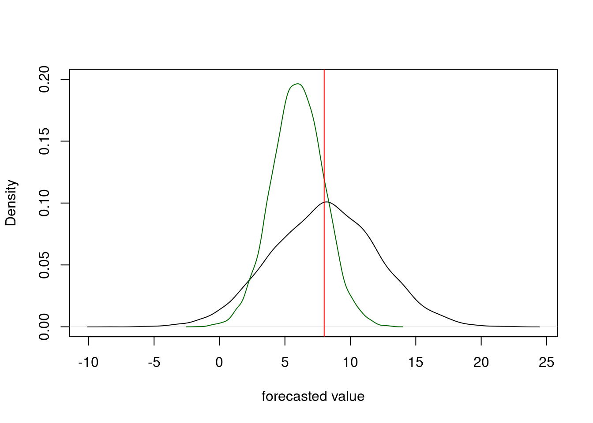
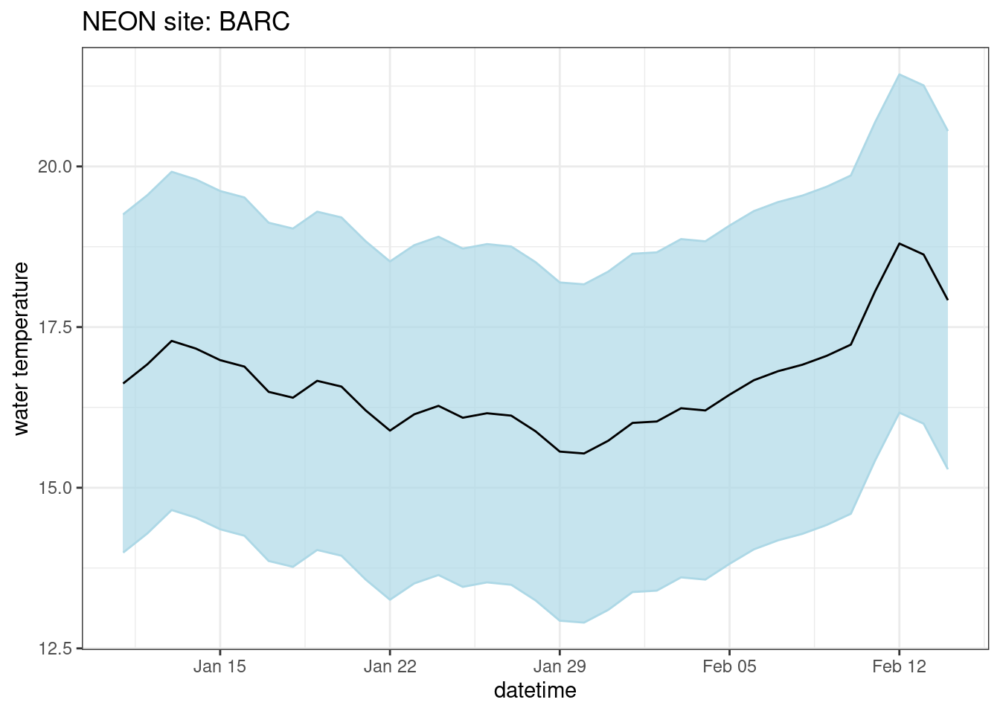
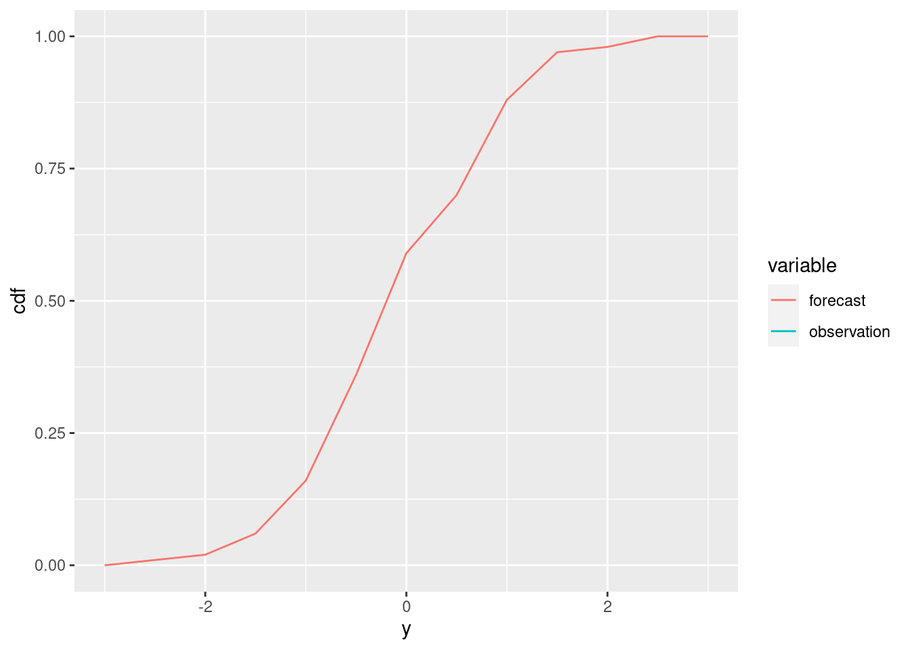
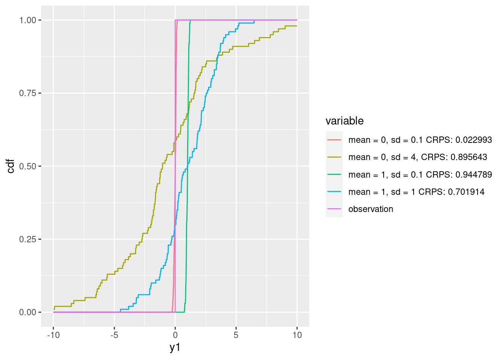

library(scoringRules)
library(tidyverse)10 Visualizing and evaluating forecasts
The fourth forecast generation assignment will challenge analyze the automated forecasts that you submitted as part of Chapter 8. The assign uses the module in Freya Olsson’s tutorial that provides code to access the automatically scored forecasts. You will add code to your repository that generates plots.
10.1 Scoring metrics
10.2 RMSE
Pending
10.3 Continuous Ranked Probability Score
Forecasts can scored using the continuous ranked probability score (CRPS), a proper scoring rule for evaluating forecasts presented as distributions or ensembles (Gneiting and Raftery (2007)). The CRPS compares the forecast probability distribution to that of the validation observation and assigns a score based on both the accuracy and precision of the forecast. We will use the ‘crps_sample’ function from the scoringRules package in R to calculate the CRPS for each forecast.
CRPS is calculate for each forecast - observation pair (e.g., a single datetime from a reference_datetime). CRPS can then be combined all sites and forecast horizons to understand the aggregate performance.
Importantly, we use the convention for CRPS where zero is lowest and best possible score, therefore forecasts want to achieve the lowest score. CPRS can be also expressed as a negative number with zero as highest and best possible score (Gneiting and Raftery (2007)). The scoringRules package that we use follows the 0 or greater convention.
10.3.1 Example of a CRPS calculation from an ensemble forecast
The goal of this section is to provide an initition for the CRPS metric.
First, create a random sample from a probability distribution. This is the “forecast” for a particular point in time. For simplicity, we will use a normal distribution with a mean of 8 and standard deviation of 1
x <- rnorm(1000, mean = 8, sd = 1.0)Second, we have our data point (i.e., the target) that we set to 8 as well.
y <- 8Now calculate CRPS using Equation 2
s <- 0
for(i in 1:length(x)){
for(j in 1:length(x)){
s <- s + abs(x[i] - x[j])
}
}
crps_equation_2 <- mean(abs(x - y)) - s / (2 * length(x)^2)
crps_equation_2[1] 0.2453952Now calculate using the crps_sample() function in the scoringRules package
crps_sample(y = y, dat = x)[1] 0.2453952The two values should be the
10.3.2 Exploring the scoring surface
Now lets see how the CRPS changes as the mean and standard deviation of the forecasted distribution change
First, set vectors for the different mean and SD values we want to explore
sample_mean <- seq(4, 12, 0.1)
sample_sd <- seq(0.1, 10, 0.1)Second, set our observed value to 8 for simplicity
y <- 8Now calculate the CRPS at each combination of forest mean and SD
combined <- array(NA, dim = c(length(sample_mean), length(sample_sd)))
for(i in 1:length(sample_mean)){
for(j in 1:length(sample_sd)){
sample <- rnorm(10000, sample_mean[i], sample_sd[j])
combined[i, j] <- crps_sample(y = y, dat = sample)
}
}Finally, visualize the scoring surface with the observed value represented by the red line
contour(x = sample_mean, y = sample_sd, z = as.matrix(combined),nlevels = 20, xlab = "Mean", ylab = "SD")
abline(v = y, col = "red")
The contour surface highlights the trade-off between the mean and standard deviation.
10.3.3 CRPS from the Normal Distribution
If the distributional forecast is a normal distribution represented by a mean \(\mu\) and standard deviation \(\sigma\), an ensemble of predictions is not needed to evaluate CRPS because we can take advantage of the analytic solution to CRPS under the normal assumption (Equation 4 from Gneiting et al. 2005)
Equation 5 from Gneiting et al. (2005) gives
\[\begin{align*} CRPS(N(\mu, \sigma^2) | y) = \sigma \left( \frac{y - \mu}{\sigma} \left( 2 \Phi\left( \frac{y - \mu}{\sigma} \right) - 1 \right) + 2 \phi \left( \frac{y - \mu}{\sigma} \right) - \frac{1}{\sqrt{\pi}} \right) \end{align*}\]
for \(\Phi(\cdot)\) and \(\phi(\cdot)\) the standard normal CDF and PDF, respectively. Therefore, if the forecast distribution is truly a normal distribution (often this isn’t true in forecasts that only report a mean and sd) a simplified score can be applied as follows:
sample_mean <- seq(4, 12, 0.1)
sample_sd <- seq(0.1, 10, 0.1)
combined_norm <- array(NA, dim = c(length(sample_mean), length(sample_sd)))
for(i in 1:length(sample_mean)){
for(j in 1:length(sample_sd)){
combined_norm[i, j] <- crps_norm(y = y, mean = sample_mean[i], sd = sample_sd[j])
}
}Finally, visualize the scoring surface with the observed value represented by the red line.
contour(x = sample_mean, y = sample_sd, z = as.matrix(combined_norm), nlevels = 20, xlab = "Mean", ylab = "SD")
abline(v = y, col = "red")Note that at a given value of the sd, the lowest score is achieved at \(\mu = y\) as shown for each of the blue lines where the minimum value of the score across each blue line is at the red line. This behavior makes sense because the CRPS is a score that rewards accuracy and precision. Thus, for any given level of precision (represented by the standard deviation), CRPS is optimized by producing the most accurate prediction of the distribution’s location.
contour(x = sample_mean, y = sample_sd, z = as.matrix(combined_norm), nlevels = 20, xlab = "Mean", ylab = "SD")
abline(v = y, col = "red")
abline(h = 2.5, col = "blue")
abline(h = 4.3, col = "blue")
abline(h = 6.8, col = "blue")
Interestingly, for a given mean \(\mu \neq y\) we find a pattern that makes intuitive sense given the goal of CRPS to produce forecasts that are both accurate and precise. For a given amount of bias in the prediction (i.e., given a \(\mu \neq y\)), the optimal score is achieved by a standard deviation that slightly larger than the bias.
layout(matrix(1:4, 2, 2, byrow = TRUE))
## plots for mu = 7
mu <- 7
contour(x = sample_mean, y = sample_sd, z = as.matrix(combined_norm), nlevels = 20, xlab = "Mean", ylab = "SD", main = paste0("CRPS contour given mu = ", mu))
abline(v = mu, col = "red")
min_sd <- sample_sd[which.min(crps_norm(y, mean = mu, sd = sample_sd))]
abline(h = min_sd, col = "blue")
plot(sample_sd, crps_norm(y, mean = mu, sd = sample_sd), type = 'l', main = paste0("CRPS profile given mu = ", mu))
abline(v = min_sd, col = "blue")
## plots for mu = 11
mu <- 11
contour(x = sample_mean, y = sample_sd, z = as.matrix(combined_norm), nlevels = 20, xlab = "Mean", ylab = "SD", main = paste0("CRPS contour given mu = ", mu))
abline(v = mu, col = "red")
min_sd <- sample_sd[which.min(crps_norm(y, mean = mu, sd = sample_sd))]
abline(h = min_sd, col = "blue")
plot(sample_sd, crps_norm(y, mean = mu, sd = sample_sd), type = 'l', main = paste0("CRPS profile given mu = ", mu))
abline(v = min_sd, col = "blue")
Next, we plot the relationship between a given value of \(\mu\) and the \(\sigma\) that produces the optimal CRPS. This looks like a linear relationship.
optimal_sd <- rep(0, length(sample_mean))
for (i in 1:length(sample_mean)) {
optimal_sd[i] <- sample_sd[which.min(crps_norm(y, mean = sample_mean[i], sd = sample_sd))]
}
plot(sample_mean, optimal_sd, type = 'l')Let’s estimate the slope of the relationship. It looks like the optimal \(sd\) for a normal distribution forecast that is biased by \(|y - \mu|\) is \(sd = 1.2|y - \mu|\) which makes sense as this would put the true value in a region of high probability.
coef(lm(optimal_sd[sample_mean > 0] ~ sample_mean[sample_mean > 0])) (Intercept) sample_mean[sample_mean > 0]
2.430864e+00 -1.478665e-16 10.4 CRPS tutorial
This provide a tutorial for the Continuous Ranked Probability Score (CRPS), a proper scoring rule used to evaluate probabilistic forecasts.
At its core, CRPS presents the difference between a cumulative probability distribution generated from the forecast and the data.
10.4.1 Set up data
We will start with the calculation of CRPS for a single forecast and observation pair.
obs <- 0Our forecast is a sample (n = 100) from a normal distribution with mean of 0 and standard deviation of 1
forecast <- rnorm(100, mean = 0, sd = 1)dy <- 0.5
y <- seq(-3,3, dy)forecast_cdf_function <- ecdf(forecast)
forecast_cdf <- forecast_cdf_function(y)
obs_cdf <- as.numeric((y > obs[i]))df <- tibble(y = y,
cdf = forecast_cdf,
variable = "forecast")
df <- bind_rows(df,
tibble(y = y,
cdf = obs_cdf,
variable = "observation"))ggplot(df, aes(x = y, y = cdf, color = variable)) + geom_line()
error <- (forecast_cdf - obs_cdf)^2tibble(y = y,
error = error) |>
ggplot(aes(x = y, y = error)) + geom_line()Warning: Removed 13 rows containing missing values (`geom_line()`).cdf_diff_area <- error * dytibble(y = y,
area = cdf_diff_area) |>
ggplot(aes(x = y, y = area)) + geom_line()crps <- sum(cdf_diff_area)10.4.2 Comparing forecasts
calculate_crps <- function(obs, forecast, dy = 0.01) {
y <- seq(-10,10, dy)
forecast_cdf <- ecdf(forecast)
cdf_diff <- (forecast_cdf(y) - as.numeric((y > obs)))^2 * dy
crps <- sum(cdf_diff)
return(crps)
}forecast1 <- rnorm(100, mean = 0, sd = 4)
forecast2 <- rnorm(100, mean = 1, sd = 2)
forecast3<- rnorm(100, mean = 0, sd = 0.1)
forecast4<- rnorm(100, mean = 1, sd = 0.1)dy <- 0.001
y <- seq(-10,10, dy)
forecast1_cdf_function <- ecdf(forecast1)
forecast2_cdf_function <- ecdf(forecast2)
forecast3_cdf_function <- ecdf(forecast3)
forecast4_cdf_function <- ecdf(forecast4)
df <- tibble(y1 = c(y,y,y,y),
cdf = c(forecast1_cdf_function(y),
forecast2_cdf_function(y),
forecast3_cdf_function(y),
forecast4_cdf_function(y)),
variable = c(rep(paste0("mean = 0, sd = 4, CRPS: ",calculate_crps(obs, forecast1)), length(y)),
rep(paste0("mean = 1, sd = 1 CRPS: ",calculate_crps(obs, forecast2)), length(y)),
rep(paste0("mean = 0, sd = 0.1 CRPS: ",calculate_crps(obs, forecast3)), length(y)),
rep(paste0("mean = 1, sd = 0.1 CRPS: ",calculate_crps(obs, forecast4)), length(y))))
df <- bind_rows(df,
tibble(y1 = y,
cdf = as.numeric((y > obs)),
variable = "observation"))ggplot(df, aes(x = y1, y = cdf, color = variable)) + geom_line()
c(scoringRules::crps_sample(y = obs, dat = forecast1),scoringRules::logs_sample(y = obs, dat = forecast1)) [1] 0.8516353 2.2693268c(scoringRules::crps_sample(y = obs, dat = forecast2),scoringRules::logs_sample(y = obs, dat = forecast2)) [1] 0.7665603 1.9671941c(scoringRules::crps_sample(y = obs, dat = forecast3),scoringRules::logs_sample(y = obs, dat = forecast3)) [1] 0.02462584 -1.27766834c(scoringRules::crps_sample(y = obs, dat = forecast4),scoringRules::logs_sample(y = obs, dat = forecast4)) [1] 0.9417776 196.4326267calculate_crps <- function(obs, forecast, dy) {
n <- nrow(forecast)
crps <- rep(NA, n)
y <- seq(-5,5, dy)
for (i in 1:n) {
forecast_cdf <- ecdf(forecast[i, ])
cdf_diff <- (forecast_cdf(y) - as.numeric((y > obs[i])))^2 * dy
crps[i] <- sum(cdf_diff)
}
return(crps)
}